iOS 26
После оплаты Apple Pay Clio предлагает сохранить трату. Сумму и магазин подставляет Wallet. Нужны iOS 26, Clio, приложение «Команды» и карта в Wallet.
Если старая автоматизация падала с «couldn’t convert from Transaction to Text», удалите её и соберите заново. В поле суммы оставалась вся транзакция.
Скрины сняты на английском iPhone. В скобках — те же кнопки на русском.
Откройте Настройки → Wallet и Apple Pay. В блоке Allow Wallet & Apple Pay to Access включите Live Activities (Эфир активности) и Mobile Data (Сотовые данные).
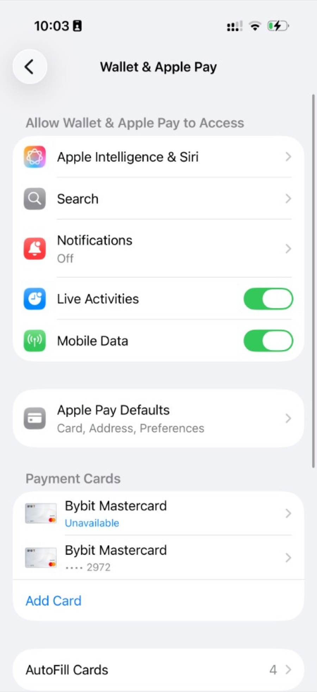
Откройте Shortcuts (Команды), вкладку Automation (Автоматизация). Нажмите + справа сверху. В первый раз кнопка посередине называется New Automation (Новая автоматизация).
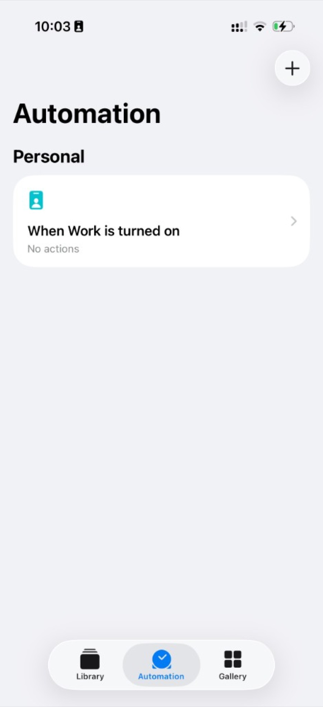
Выберите Wallet — «When I tap a Wallet Card or Pass» (Когда я подношу карту Wallet).
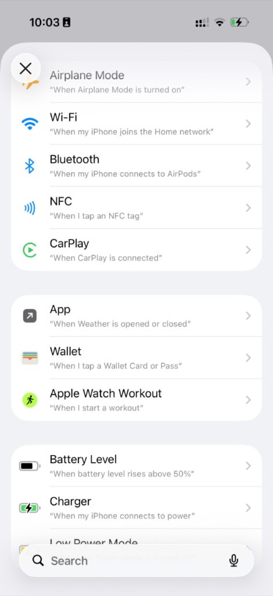
Отметьте карты, которыми платите. Категории можно оставить все включёнными. Дальше.
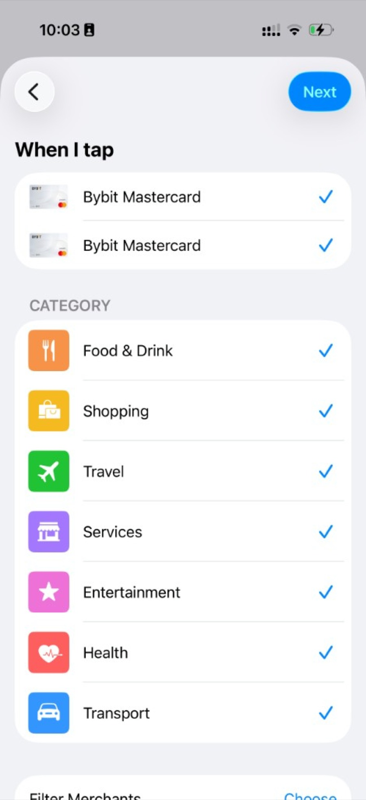
Выберите Run Immediately (Немедленный запуск), не Run After Confirmation (Запуск после подтверждения). Notify When Run (Уведомлять при запуске) оставьте выключенным. Дальше.
Запуск после подтверждения показывает только маленькое системное уведомление. Карточка Clio не появляется.
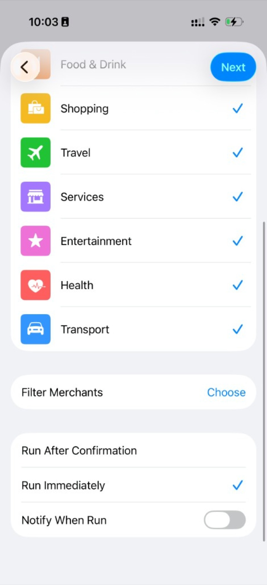
Нажмите серую карточку Create New Shortcut (Создать новую команду) слева сверху. Не выбирайте готовую команду из списка ниже.
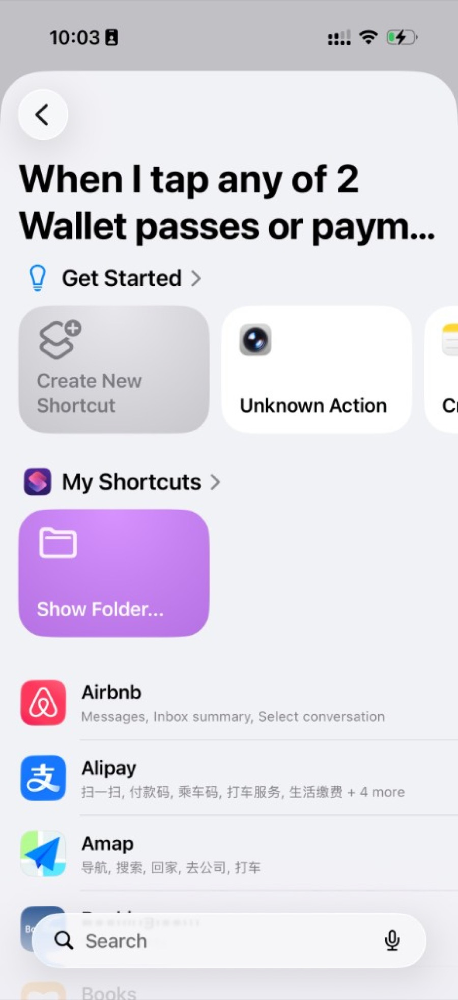
В поиске внизу введите Clio. Нажмите Save Wallet Expense.
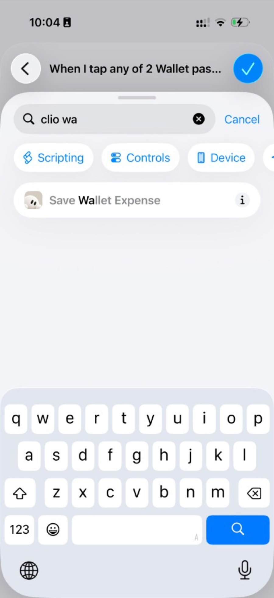
Появятся два блока: «Receive transaction as input» и Save Wallet Expense. Amount и Merchant пока пустые.
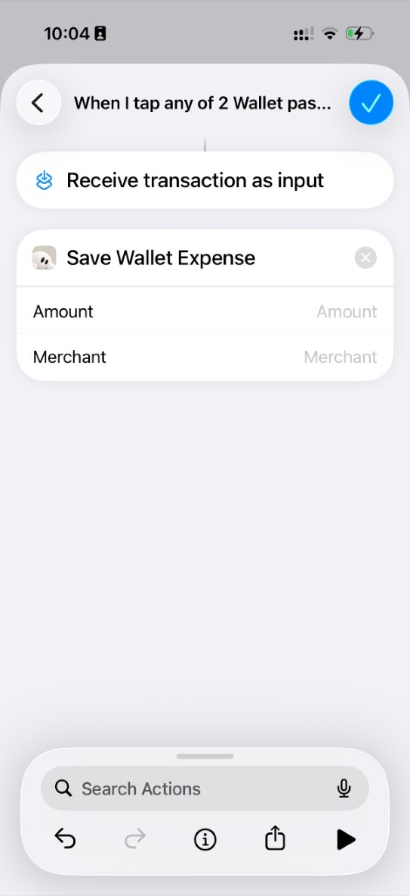
Нажмите поле Amount (Сумма). Над клавиатурой нажмите Select Variable (Выбрать переменную).
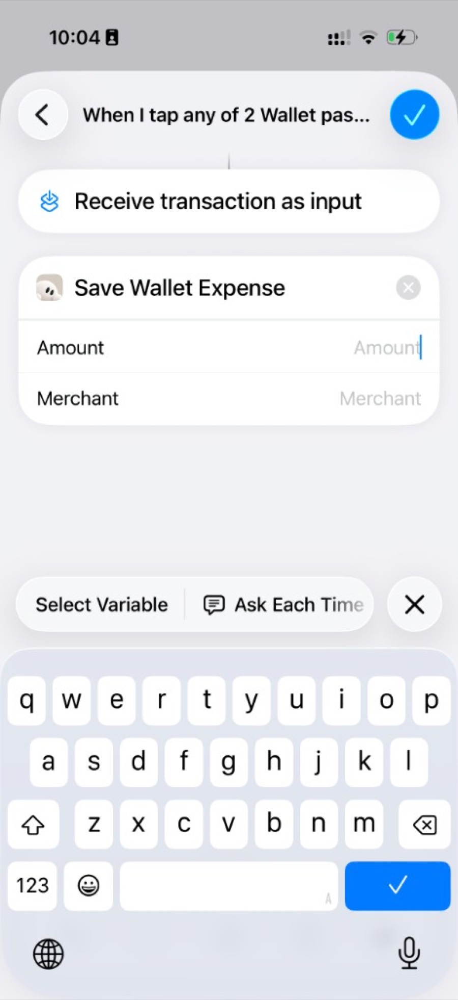
Нажмите синюю метку Shortcut Input (Входные данные команды) под блоком «Receive transaction as input».
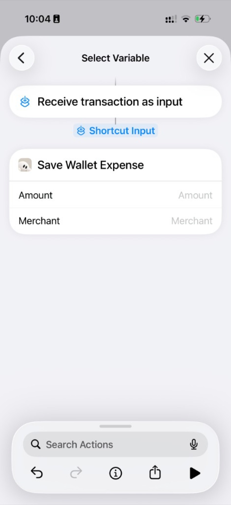
Метка, на которой написано только Shortcut Input, ещё не сумма. Так в Clio уходит вся транзакция, и Команды падают до чтения суммы.
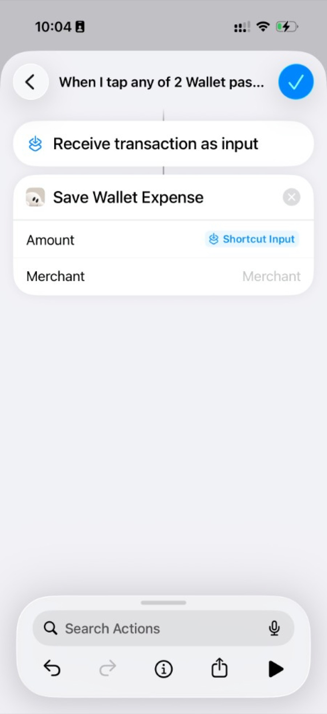
Нажмите эту метку ещё раз. Тип — Transaction (Транзакция). Не оставляйте галочку на Transaction. Пролистайте и нажмите Amount (Сумма).
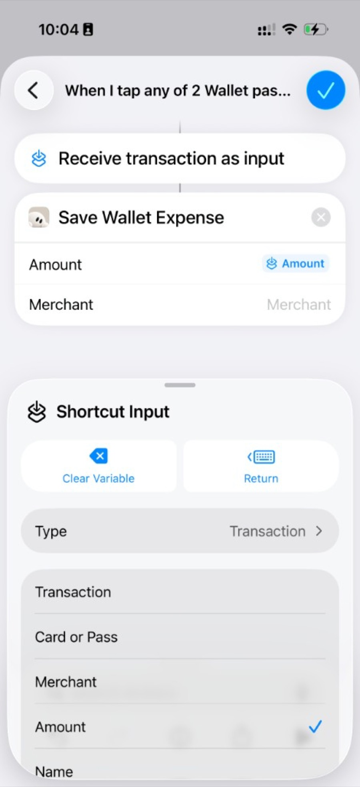
В поле появляется синяя метка Amount, не Shortcut Input.
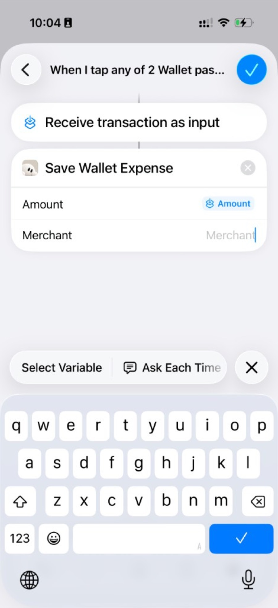
Нажмите Merchant (Продавец) и повторите тот же путь. В списке транзакции выберите Merchant, не Transaction.
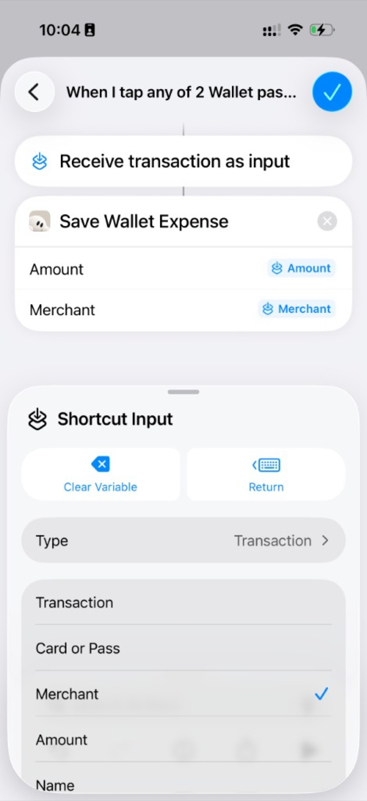
Нажмите синюю галочку сверху. Автоматизация появится в списке. Следующая оплата выбранной картой спросит, сохранить ли трату в Clio.
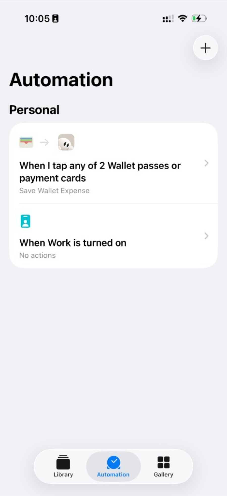